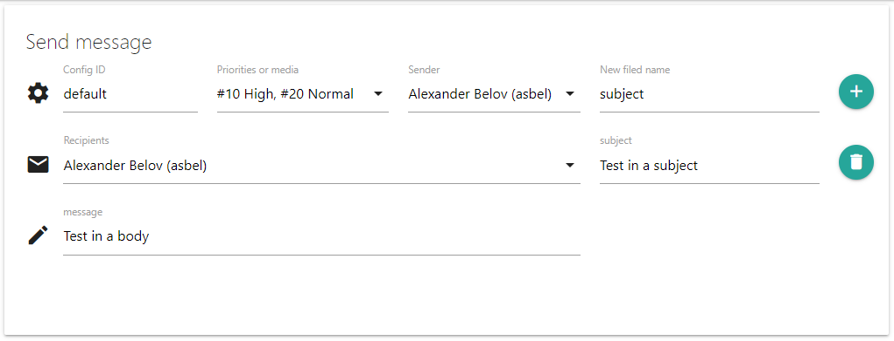

Описание Send message
С помощью Send message можно сформировать и отправить сообщение пользователям. Действие служит для проверки работы модулей Communication media и автоматизации отправки сообщений.
Возвращаемое значение: массив из media ID, которые использовались при отправке сообщения
Описание интерфейса
Поля ввода имеют следующее предназначение:
- ConfigID - идентификатор конфигурации средств связи. В зависимости от него будет производится выбор настроек для средств связи. Если конфигурации с таким идентификатором не окажется, будет использована конфигурация с идентификатором "default". Название идентификаторов можно посмотреть в конфигурационных файлах средств связи.
- Priorities or media - Установка приоритета сообщения (Priorities) для автоматического выбора средства связи в зависимости от настроек пользователя, либо выбор определенного средства связи, (Medias) необходимого для отправки сообщения. Ели выбрано определенное средство связи, автоматический выбор средства через приоритеты использоваться не будет. Можно выбрать несколько приоритетов. Средство связи может быть выбрано выбрать только одно, если будет выбрано несколько средств связи будет использоваться первое.
- Sender - выбор отправителя сообщения
- Recipients - выбор получателей сообщения.
- Message - текст сообщения. Поле ввода является многострочным.
- New field name - Поле служит для ввода дополнительных параметров сообщения. Если параметры поддерживаются выбранным средством связи, они будут использованы при отправки сообщения. Посмотреть поддерживаемые параметры можно в описании средства связи, настройка message. Для ввода дополнительного параметра необходимо ввести его название и нажать на "+". Новое многострочное поле ввода появится ниже. В него необходимо ввести требуемое значение. На примере выше создано дополнительное поле subject в которое введено значение "Test in a subject". Такой параметр имеет смысл для email сообщений. Если сообщение будет отправлено например, через СМС сервис провайдера, этот параметр будет проигнорирован.